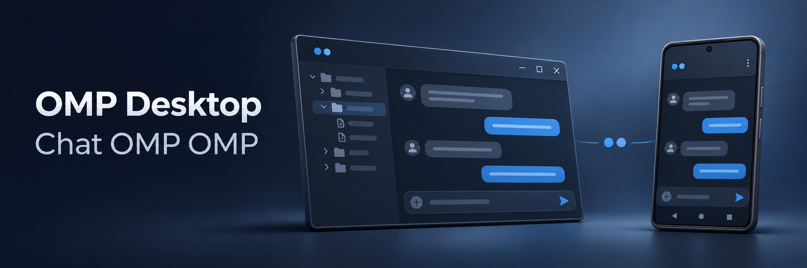

Shared conversations
See which conversations are active, continue them on either device, and share project folders.

Pick up the same Oh My Pi conversation, follow live tasks, and review changes from your phone. OMP Bridge keeps both apps connected to the projects and model configuration on your PC.
Bridge 2.9.39 · Desktop 0.8.5 · Android 0.2.5
See which conversations are active, continue them on either device, and share project folders.
Preview a local website, send an element as context, and review diffs and test results beside the conversation.
Use the localhost Skills page to preview imports, manage scopes, and keep project settings in sync.
Yes. Keep it awake and sign in to Windows. Bridge starts at sign-in by default.
Bridge uses the OMP conversations on your PC. Android connects with a short-lived pairing code.
Use a trusted VPN that can reach your PC. Keep the Bridge port off the public internet.